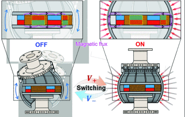
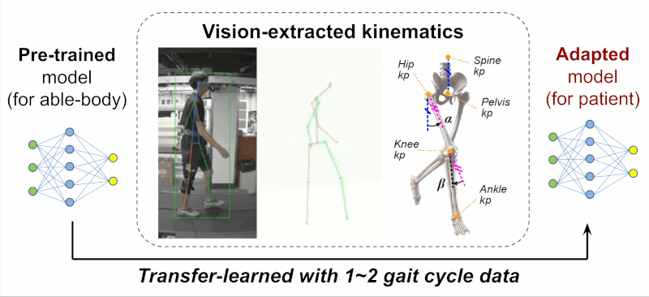
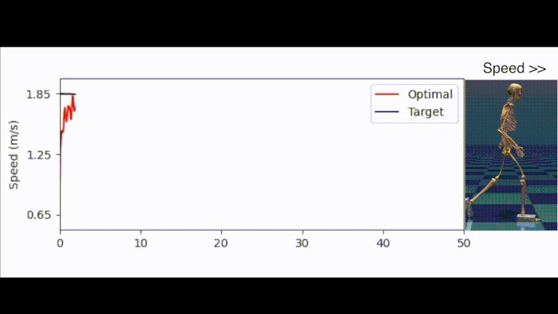

|
Changseob Song I'm a PhD candidate at Carnegie Mellon University, where I work with Prof. Inseung Kang at MetaMobility Lab. I am working on exoskeleton personalization using machine learning, computer vision, and physics-informed musculoskeletal simulation. I did my BS and MS at Korea University, where I was advised by Prof. Shinsuk Park. During my MS, I worked at Korea Institute of Science and Technology, where I was advised by Dr. Donghyun Hwang and worked on magnetic field-driven variable stiffness mechanisms. Email / CV / Google Scholar / LinkedIn / Github |

|
ResearchI'm interested in enhancing human mobility using exoskeleton, robotics, and machine learning. |
|

|
On the Design of Fast-Response Variable-Stiffness Continuum Robot with Electro-Permanent Magnet-Based Ball Joints
Taerim Lee, Han-sol Lee, Changseob Song, Donghyun Hwang, IEEE/RSJ International Conference on Intelligent Robots and Systems (IROS), 2025 (Best Paper Award) Paper / Video Rapid-response (19 ms) and high stiffness variation ratio (205x) continuum robot using electro-permanent magnet and radially contraction mechanism. |

|
Stiffening Iron Particles to Modulate Physical Interactions
Changseob Song, Han-sol Lee, Shinsuk Park, Donghyun Hwang, Nature Communications, 2025 Paper (Videos available in supplementary materials) Magnetic granular jamming mechanism that can modulate rigidity of 3D structures for robotic applications. |
|

|
Personalization of Wearable Sensor-Based Joint Kinematic Estimation Using Computer Vision for Hip Exoskeleton Applications
Changseob Song*, Bogdan Ivanyuk-Skulskyi*, Adrian Krieger, Kaitao Luo, Inseung Kang, International Conference On Rehabilitation Robotics (ICORR), 2025 Paper / Project Page / Video Rapid personalization of joint kinematic estimator using computer vision-based human pose estimation and transfer learning. |
|

|
Learning Speed-Adaptive Walking Agent Using Imitation Learning with Physics-Informed Simulation
Yi-Hung Chui*, Ung Hee Lee*, Changseob Song, Manaen Hu, Inseung Kang, International Conference On Rehabilitation Robotics (ICORR), 2025 Paper / Video Speed-adaptive walking agent using imitation and curriculum learning with physics-informed simulation to generate biomechanically plausible kinematic and kinetic gait data. |

|
Optimizing Locomotor Task Sets in Biological Joint Moment Estimation for Hip Exoskeleton Applications
Jimin An,, Changseob Song, Eni Halilaj, Inseung Kang, International Conference On Rehabilitation Robotics (ICORR), 2025 Paper / Video Minimizing locomotor tasks sets (from 20 to 8) using dimensionality reduction and clustering to reduce the data collection burden in biological joint moment estimation. |

|
On the Design of Integrated Tele-Monitoring/ Operation System for Therapeutic Devices in Isolation Intensive Care Unit
Changseob Song*, Gyungtak Yang*, Sungwoo Park, Namseon Jang, Soobin Jeon, Sang-Rok Oh, Donghyun Hwang, IEEE Robotics and Automation Letters (RAL) w/ IROS presentation, 2022 Paper / Video Tele-monitoring and -operation system for medical devices in isolation intensive care unit developed for pandemic and tele-medicine applications. |
Honors and Awards |
|
Award Name, Organization, Year |
|
Webpage adapted from Jon Barron's website. |